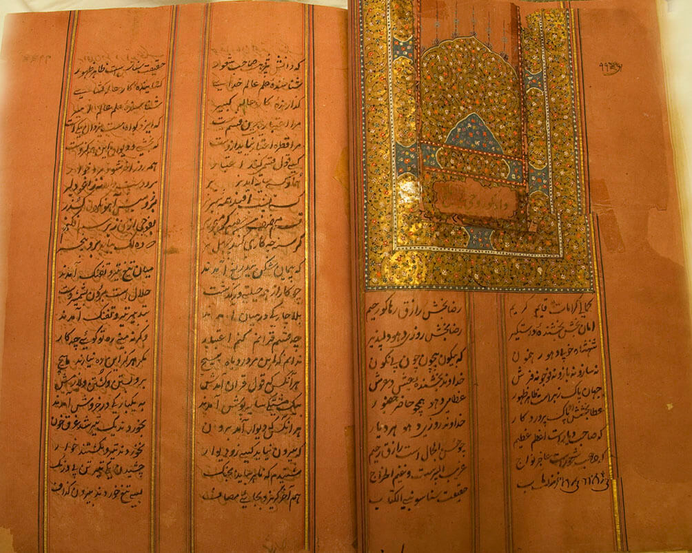

Guru Gobind Singh Ji was the tenth leader of the Sikh community, following in the footsteps of his father, Guru Tegh Bahadur Singh Ji, when he was only nine years old. He was a multifaceted personality, excelling in the arts of warfare, poetry, and philosophy. His contributions to Sikhism were significant, particularly his efforts to formalize and organize the faith, which was established by the first Sikh Guru, Nanak, in the 15th century.
One of Guru Gobind Singh Ji's most notable contributions was the initiation of the Khalsa brotherhood in 1699. This event marked the passing of the Sikh leadership to the eleventh and eternal Guru of the Sikhs, the Guru Granth Sahib Ji, which is the sacred text of the Sikh religion. Guru Gobind Singh Ji's influence was instrumental in shaping the modern Sikh religion, and his formation of the Khalsa brotherhood and completion of the Guru Granth Sahib Ji are regarded by many as his most significant achievements.
The quote by W. L. McGregor can be paraphrased as follows: When we take into account the achievements of (Guru) Gobind Singh Ji, such as his efforts to reform his religion and establish a new set of laws for his followers, his extraordinary courage in all situations, and his unwavering perseverance in the face of daunting challenges that would have discouraged and overwhelmed others, it is no wonder that Sikhs hold him in high esteem. Moreover, his ultimate triumph over powerful adversaries, including those who had previously abandoned him, further solidifies his greatness. Undoubtedly, he was a remarkable individual.
Gobind Rai, who later became known as Guru Gobind Singh Ji, was the tenth spiritual leader of the Sikh faith. He was an exceptional figure whose inspiring personality is unrivaled in human history.
Guru Gobind Singh Ji instilled in his followers the values of both spiritual purity and bravery, urging them to fight against oppression and restore justice, peace, and righteousness (Dharma) to society. His teachings also focused on uplifting those who were marginalized and disadvantaged, inspiring his followers to work towards creating a more just and equitable world.

According to legend, after the martyrdom of his father, Guru Tegh Bahadur Singh Ji, the tenth Master announced his intention to establish a Panth, or community, that would confront tyrannical rulers at every turn, with the goal of restoring justice, equality, and peace for all humanity. As a prophet, the Guru is truly exceptional.
His teachings are grounded in scientific principles and are relevant in all times. Unlike many other prophets, he did not claim to be God or the only son of God. Instead, he regarded all people as equal children of God who shared in His Kingdom. The Guru referred to himself as a 'slave' or servant of God.
Guru Gobind Singh Ji, the tenth Sikh Guru, was born in Patna, Bihar on December 22, 1666. He was the only son of Guru Tegh Bahadur Singh Ji, the ninth Sikh Guru, and his wife, Mata Gujri. The family was visiting Bengal and Assam at the time of his birth. They resided in Patna for the first four years of his life, during which time he was known as Gobind Das/Rai.
The site of Guru Gobind Singh Ji's birthplace is marked by a shrine called Takht Sri Patna Harmandir Sahib. In 1670, his family returned to Punjab, and in March 1672, they settled in Chakk Nanaki in the Sivalik range, a region of the Himalayan foothills in North India. It was here that he received his early education.
In 1675, Guru Tegh Bahadur Singh Ji was approached by Kashmiri Pandits who sought protection from the fanatical persecution by Iftikar Khan, the Mughal governor of Kashmir, who was under the rule of Mughal Emperor Aurangzeb. Guru Tegh Bahadur considered a peaceful solution by meeting with Aurangzeb, but his advisors warned him that his life could be in danger. However, his young son, Gobind Rai – who would later become known as Gobind Singh – encouraged his father, believing that he was the worthiest leader to make a sacrifice. Despite the risks, Guru Tegh Bahadur made the attempt to meet with Aurangzeb, but was subsequently arrested and publicly beheaded in Delhi on 11 November 1675 for refusing to convert to Islam and due to the ongoing conflicts between Sikhism and the Islamic Empire.
Before his death, Guru Tegh Bahadur Ji wrote a letter to his son, Guru Gobind Rai, known as Mahalla Dasven, as a final test to determine the next Guru. After his father's martyrdom, Guru Gobind Rai was appointed as the tenth Sikh Guru on Vaisakhi on 29 March 1676.
Guru Gobind Singh Ji's education continued even after he became the tenth Guru. In addition to reading and writing, he also received training in martial arts, including horse riding and archery. He learned Farsi in just one year and began his martial arts training at the age of six.
In 1684, Guru Gobind Singh Ji wrote the Chandi di Var in Punjabi, which depicts the legendary battle between good and evil, where the forces of righteousness rise up against injustice and tyranny, as described in the ancient Sanskrit text Markandeya Purana. He stayed in Paonta, located near the banks of the river Yamuna, until 1685.
An image of Bhai Rupa showing the Guru at the age of 23 is available. Guru Gobind Singh Ji had three wives during his lifetime. At the age of 10, he married Mata Jito on 21 June 1677 at Basantgaṛh, which is located 10 km north of Anandpur. The couple had three sons: Jujhar Singh (born in 1691), Zorawar Singh (born in 1696) and Fateh Singh (born in 1699).
At the age of 17, Guru Gobind Singh Ji married Mata Sundari on 4 April 1684 at Anandpur. The couple had one son, Ajit Singh (born in 1687). At the age of 33, Guru Gobind Singh Ji married Mata Sahib Devan on 15 April 1700 at Anandpur. Although they had no children, Mata Sahib Devan played an influential role in Sikhism, and Guru Gobind Singh Ji proclaimed her as the Mother of the Khalsa. Initially, the Guru rejected her marriage proposal, but he eventually agreed to the marriage on the condition that she remain a virgin for life.
The life example and leadership of Guru Gobind Singh Ji have been of historical importance to the Sikhs. He institutionalized the Khalsa, also known as the Pure Ones, who played a key role in protecting the Sikhs long after his death. The Khalsa defended against numerous invasions of Punjab, including the holy war led by Ahmad Shah Abdali from Afghanistan between 1747 and 1769.
A Fresco of Guru Gobind Singh ji and The Panj Pyare in Gurdwara Bhai Than Singh built in the reign of Maharaja Ranjit Singh Ji. In 1699, Guru Gobind Singh Ji summoned the Sikhs to assemble at Anandpur during the Vaisakhi festival. As per Sikh tradition, he asked for a volunteer from the crowd. One person stepped forward, and the Guru took him inside a tent. When the Guru came out of the tent, his sword was covered in blood. He repeated this process four more times with other volunteers, returning each time with a bloodied sword but without anyone.
On the fifth occasion, the Guru took a fifth volunteer with him into the tent and returned with all five volunteers, unharmed. He named these five volunteers the Panj Pyare, or the Five Beloved Ones, who were the first members of the Khalsa in the Sikh tradition. A fresco depicting this event can be seen in the Gurdwara Bhai Than Singh, built during the reign of Maharaja Ranjit Singh Ji.
Guru Gobind Singh Ji proceeded to create the Amrit ("nectar") by mixing water and sugar in an iron bowl, and stirred it with a double-edged sword. He then gave this mixture to the Panj Pyare (the five beloved ones), while reciting verses from the Adi Granth, and founded the khande ka pahul (baptization ceremony) of the Khalsa - a community of warriors. Additionally, the Guru gave them the surname "Singh" (lion). After the first five Khalsa were baptized, the Guru asked them to baptize him as a Khalsa as well, making him the sixth Khalsa and leading to his name changing from Guru Gobind Rai to Guru Gobind Singh Ji. This ceremony replaced the charan pahul ritual that had been practiced by previous gurus, which involved an initiate drinking water that the Guru or a masand of the Guru had dipped their right toe in.
Guru Gobind Singh Ji also introduced five articles of faith called the Five Ks that were to be worn by all baptized Sikhs. These included uncut hair (Kesh), a wooden comb (Kangha), an iron or steel bracelet worn on the wrist (Kara), a sword or dagger (Kirpan), and short breeches (Kacchera). In addition, he established a code of discipline for Khalsa warriors, forbidding tobacco, eating 'halal' meat, fornication, and adultery. The Khalsas also pledged to never associate with those who followed rival or successor groups. The co-initiation of men and women from different castes into the Khalsa ranks also promoted the principle of equality in Sikhism regardless of caste or gender.
Guru Gobind Singh Ji's significance to the Sikh tradition cannot be overstated. He institutionalized the Khalsa, stood up against the ongoing persecution by the Mughal Empire, and continued to defend dharma, which he defined as True Religion, against the assault of Aurangzeb. Anandpur Sahib Gurdwara, located in the state of Punjab, is the birthplace of the Khalsa.
Guru Gobind Singh Ji's ideas indirectly challenged the discriminatory taxes imposed by Mughal authorities. For instance, Aurangzeb had imposed taxes on non-Muslims, such as the jizya (poll tax on non-Muslims), pilgrim tax, and Bhaddar tax. The last tax was imposed on anyone following the Hindu ritual of shaving their head after the death of a loved one and cremation, and it was also collected from the Sikhs. Guru Gobind Singh Ji declared that the Khalsa does not need to continue this practice, as he believed that Bhaddar was not dharam (religion), but a bharam (illusion). By not shaving their heads, Sikhs who lived in Delhi and other parts of the Mughal Empire were not required to pay these taxes. However, the new code of conduct led to internal disagreements between Sikhs in the 18th century, particularly between the Nanakpanthi and the Khalsa.
Guru Gobind Singh Ji held the Khalsa in high regard and believed that there was no distinction between the True Guru and the sangat (community). Prior to the Khalsa, the Sikh movement used the term Sisya (meaning disciple or student) but after its establishment, the term Khalsa became more commonly used. The Sikh congregations across India had a system of Masands appointed by the Sikh Gurus before the Khalsa. These Masands were responsible for leading local Sikh communities, temples, and collecting wealth and donations for the Sikh cause. However, Guru Gobind Singh Ji observed that the Masands system had become corrupt and he abolished it. He introduced a more centralized system with the assistance of Khalsa that was under his direct supervision. These developments created two groups of Sikhs: those who were initiated as Khalsa and those who remained Sikhs but did not undertake the initiation. The Khalsa Sikhs saw themselves as a separate religious entity, while the Nanak-panthi Sikhs retained their distinct perspective.
The tradition of the Khalsa warrior community, which was started by Guru Gobind Singh Ji, continues to be a topic of scholarly debate regarding pluralism within Sikhism. This tradition has persisted through the modern era, with those who have undergone the initiation referred to as Khalsa Sikhs, while those who have not are known as Sahajdhari Sikhs.
After the execution of Guru Tegh Bahadur Ji, the father of Guru Gobind Singh Ji, the Mughal Empire under Aurangzeb became an increasingly hostile enemy of the Sikh people. Led by Guru Gobind Singh Ji, the Sikhs resisted and Muslim-Sikh conflicts reached their peak during this period. The Mughal administration and Aurangzeb's army both took an active interest in Guru Gobind Singh Ji, with Aurangzeb even issuing an order to exterminate him and his family.
Guru Gobind Singh Ji believed in the concept of Dharam Yudh, which means a war fought for the defense of righteousness. According to him, such a war should only be fought as a last resort, and should not be motivated by a desire for revenge, greed, or any destructive goals. He believed that one should be willing to sacrifice their life to stop tyranny, end persecution, and defend their religious values. During his lifetime, he led fourteen wars with these objectives, but he never took captives or damaged any place of worship.
During his lifetime, Guru Gobind Singh Ji had four sons who are also known as the Chaar Sahibzaade (the four princes). Unfortunately, both the elder sons were killed in a battle with the Mughals, while the younger ones were executed by the Mughal governor of Sirhind.
In December 1704, Guru Gobind Singh Ji and his two elder sons managed to escape the siege of Anandpur and reached Chamkaur. However, they were pursued by a large Mughal army, and a battle ensued. During the battle, the Guru's elder sons, also known as the 'Vaade Sahibzaade', fought bravely against the much larger and better-equipped Mughal army. While the Guru was able to escape to a safe place, his two sons, Sahibzada Ajit Singh Ji (aged 17) and Jujhar Singh Ji (aged 13), were killed in the Battle of Chamkaur.
After the Mughal siege of Anandpur in December 1704, Guru Gobind Singh ji's mother, Mata Gujri, and his two younger sons became separated from him. Later, they were captured by the forces of Wazir Khan, the Mughal governor of Sirhind. The younger sons, known as the 'Chotte Sahibzaade,' and their grandmother were imprisoned in a tower called the Thanda Burj during the chilling winter days. On the 26th and 27th of December 1704, the Mughal forces offered a safe passage to the younger sons, Sahibzada Fateh Singh (aged 6) and Zorawar Singh (aged 9), if they converted to Islam. However, they refused to do so, and Wazir Khan ordered them to be bricked alive in the wall. Mata Gujri fainted upon hearing about her grandsons' death and died shortly thereafter.
Guru Gobind Singh Ji's adopted son, Zorawar Singh Paut, whose real name is unknown, died in 1708 near Chittorgarh Fort in a skirmish with local soldiers. According to Sainapati, Zorawar Singh Paut had managed to escape in the Battle of Chamkaur and later met the Guru in Rajputana. After that, he got into a minor scuffle at Chittorgarh and died. According to Sikh historians, Guru Gobind Singh Ji took the harsh news about the execution of his sons with a stoic calm and wrote, "What use is it to put out a few sparks when you raise a mighty flame instead?"
After Aurangzeb's death in 1707, a power struggle ensued between his sons, who engaged in battles with each other. The rightful heir to the throne was Bahadur Shah, who requested a meeting with Guru Gobind Singh Ji and his army in the Deccan region of India in an attempt to reconcile. The Guru accepted the invitation, hoping to regain control of his former stronghold, Anandpur. He stayed near the imperial camp for almost a year, making appeals for the return of his lands. However, Bahadur Shah continuously postponed any action to restore the status quo ante, as he did not want to offend either the Guru or the hill rajas.
Wazir Khan, a Muslim army commander and the Nawab of Sirhind, had fought against Guru Gobind Singh Ji's army in several wars. He commissioned two Afghans, Jamshed Khan and Wasil Beg, to follow the Guru's army and assassinate him during his meeting with Bahadur Shah. The two assassins secretly followed the Guru's army and entered the camp when the Sikhs were stationed near the river Godavari for months. They gained access to the Guru and Jamshed Khan fatally wounded him at Nanded. Some scholars dispute whether the assassins were sent by Wazir Khan or by the Mughal army staying nearby.
According to Sri Gur Sobha, a writer from the early 18th century, Guru Gobind Singh Ji received a fatal wound below his heart. Despite the injury, the Guru fought back and killed his assassin, while the assassin's companion was killed by Sikh guards as he tried to flee. The Guru succumbed to his injuries and died a few days later on October 7th, 1708. His death intensified the ongoing conflict between the Sikhs and the Mughals, leading to a long and bitter war.
According to the Bansavalinama, a historical account written by Kesar Singh Chibber in 1768, the last words of Guru Gobind Singh Ji were, "The Granth (the Sikh holy scripture) is the Guru and it will guide you to the divine. The Guru is the Khalsa (the community of initiated Sikhs) and the Khalsa is the Guru. The leadership has been given to Sri Sahib Mata Devi (referring to the holy scripture). Love and serve one another, and strive to expand the community. Follow the teachings of the Granth. Those Sikhs who adhere to the principles of Sikhism shall remain with the Guru. Follow the example set by the Guru and always remain connected to Waheguru (God)."
In this letter, Guru Gobind Singh Ji reminds Aurangzeb of how he and his soldiers had broken their oaths sworn upon the Qur'an by launching a hidden attack on forty famished Sikh soldiers, despite promising safe passage to the Guru. He tells Aurangzeb that this was not a battle, but a slaughter. Despite losing most of his Sikhs in this attack, he had won a moral victory over the Emperor who had broken his vows to Allah. The Guru also states that despite sending a huge army to capture or kill him, the Mughal forces did not succeed in their mission.